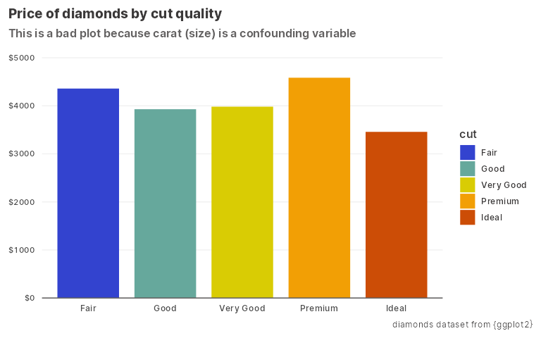

Installation
You can install the development version from GitHub with:
# install.packages("devtools")
devtools::install_github("yjunechoe/penngradlings")Example
library(penngradlings)
#> Package fonts loaded. See `?load_pkg_fonts` for details.
library(ggplot2)
ggplot(diamonds, aes(cut, price, fill = cut)) +
stat_summary(geom = "bar", fun = "mean", width = 0.8) +
scale_y_continuous(
expand = expansion(c(0, 0.1)),
labels = ~ paste0("$", .x)
) +
scale_fill_pgl_discrete(what = "cat_coaster", who = "xin") +
labs(
title = "Price of diamonds by cut quality",
subtitle = "This is a bad plot because carat (size) is a confounding variable",
x = NULL, y = NULL,
caption = "diamonds dataset from {ggplot2}"
) +
theme_pgl_minimal(axis_lines = "x", grid_lines = "y")
More on the package website.